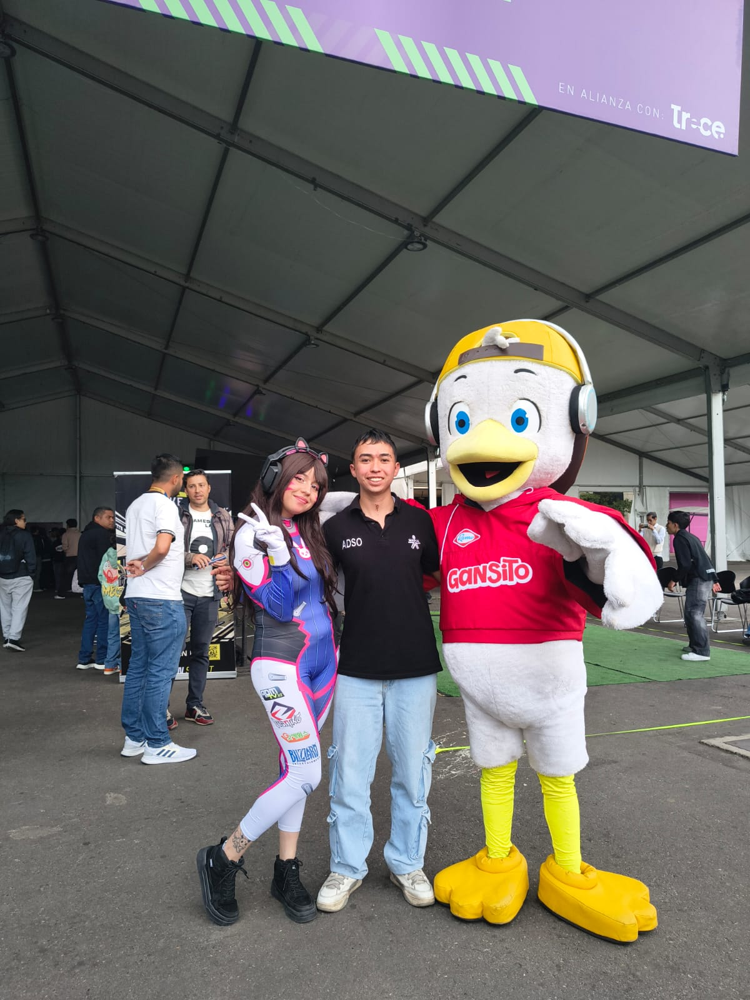
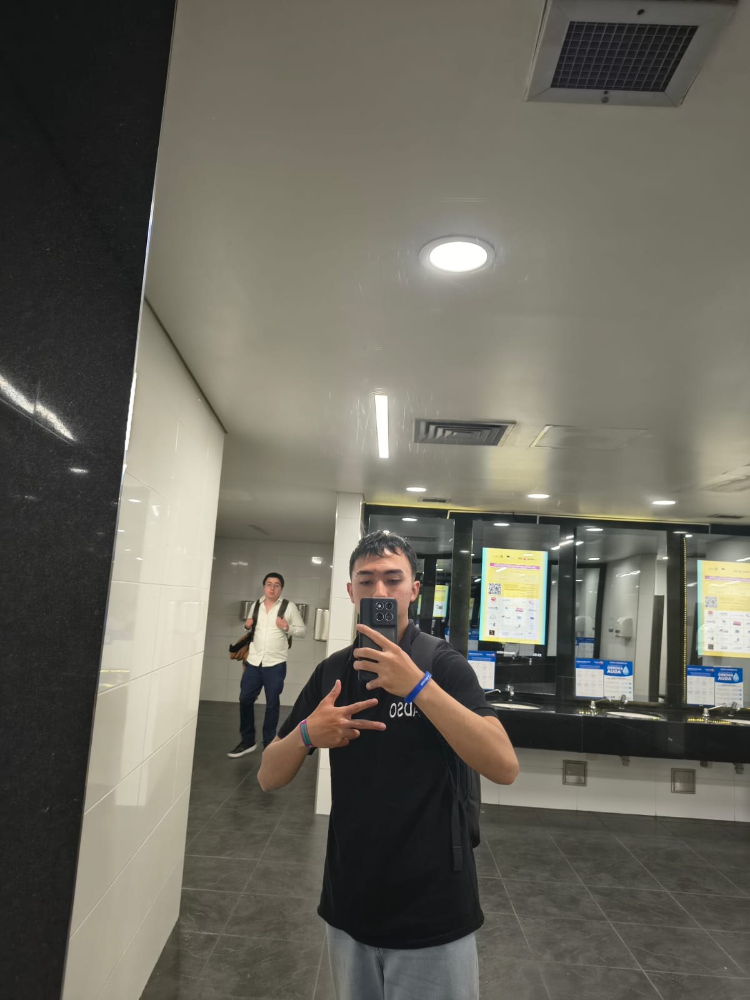

// video de la zona gamer
// galería fotográfica


Mi Experiencia en la Zona Gamer
La Zona Gamer de Colombia 5.0 fue uno de los espacios más entretenidos y llamativos que encontré durante el evento. Había diferentes actividades para todos los gustos, desde competencias de videojuegos como FIFA y Valorant hasta experiencias deportivas apoyadas por tecnología. Además, el lugar contaba con pantallas, monitores y equipos muy llamativos que hacían que el ambiente fuera aún más emocionante y atractivo para los asistentes.
Entre todas las actividades disponibles, decidí participar en un juego que combinaba elementos del fútbol y el voleibol. Se jugaba en parejas y consistía en pasar el balón por encima de una malla baja utilizando únicamente los pies y otras partes del cuerpo, sin usar las manos. Fue una experiencia muy divertida porque además de requerir coordinación y trabajo en equipo, generaba momentos de competencia sana entre los participantes.
También me llamó la atención la variedad de actividades que se ofrecían en la zona. Mientras algunas personas participaban en torneos de videojuegos, otras disfrutaban de juegos de baile similares a Just Dance o de partidos de fútbol con drones. Esto demostraba cómo la tecnología puede integrarse con diferentes formas de entretenimiento y crear experiencias innovadoras para personas con distintos intereses.
En general, la Zona Gamer fue una experiencia muy agradable dentro de Colombia 5.0. Más allá de los equipos y las pantallas, lo que más disfruté fue la oportunidad de participar activamente en las actividades, compartir con otros asistentes y conocer nuevas formas en las que la tecnología puede combinarse con el deporte y el entretenimiento. Sin duda, fue uno de los espacios que más disfruté durante el evento.
My Experience in the Gamer Zone
The Gaming Zone at Colombia 5.0 was one of the most entertaining and engaging areas I found during the event. There were different activities for all tastes, ranging from video game competitions like FIFA and Valorant to sports-based experiences supported by technology. The space also had screens, monitors, and very eye-catching equipment that made the atmosphere even more exciting for all attendees.
Among all the available activities, I decided to take part in a game that combined elements of soccer and volleyball. It was played in pairs and involved passing the ball over a low net using only the feet and other parts of the body, without using hands. It was a very fun experience because it required coordination and teamwork, while also creating moments of friendly competition between participants.
I was also impressed by the variety of activities offered in the area. While some people were competing in video game tournaments, others were enjoying dance games similar to Just Dance or participating in drone soccer matches. This showed how technology can be integrated with different forms of entertainment to create innovative experiences for people with different interests.
Overall, the Gaming Zone was a very enjoyable experience at Colombia 5.0. Beyond the equipment and screens, what I enjoyed the most was having the opportunity to actively participate in the activities, share with other attendees, and discover new ways in which technology can be combined with sports and entertainment. Without a doubt, it was one of the areas I enjoyed the most during the event.
// innovación tecnológica destacada
Tech Highlights
e-Sports Competitivo
Demostraciones en vivo de competencias profesionales que evidencian cómo el gaming de élite exige las mismas capacidades cognitivas que otras disciplinas deportivas.